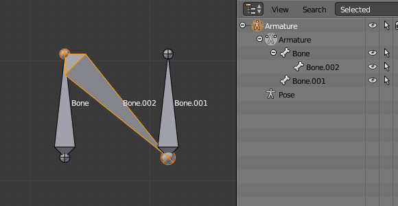
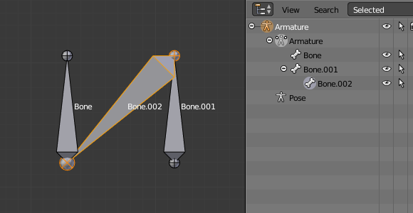

Fill Between Joints¶
Reference
- Mode
Edit Mode
- Menu
- Hotkey
F
The main use of this tool is to create one bone between two selected joints by pressing F, similar to how in mesh editing you can "create edges/faces".
If you have one root and one tip selected, the new bone:
Will have the root placed on the selected tip.
Will have the tip placed on the selected root.
Will be parented and connected to the bone owning the selected tip.

Active tip on the left.¶ |

Active tip on the right.¶ |
If you have two tips selected, the new bone:
Will have the root placed on the selected tip closest to the 3D cursor.
Will have the tip placed on the other selected tip.
Will be parented and connected to the bone owning the tip used as the new bone's root.

3D cursor on the left.¶ |

3D cursor on the right.¶ |
If you have two roots selected, you will face a small problem due to the event system in Blender not updating the interface in real-time.
When clicking F, similar to the previous case, you will see a new bone:
With the root placed on the selected root closest to the 3D cursor.
With the tip placed on the other selected root.
Parented and connected to the bone owning the root used as the new bone's root.
If you try to move the new bone, Blender will update the interface and you will see that the new bone's root moves to the tip of the parent bone.

Before UI update (3D cursor on the left).¶ |

After UI update, correct visualization.¶ |
Clicking F with only one bone joint selected will create a bone from the selected joint to the 3D cursor position, and it will not parent it to any bone in the armature.

Fill with only one tip selected.¶ |

Fill with only one root selected.¶ |
You will get an error when:
Trying to fill two joints of the same bone.
Trying to fill more than two bone joints.